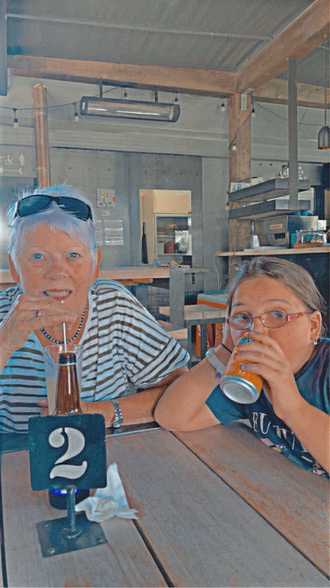

Place One:
Experience luxury lakefront living with panoramic views of Lake Wanaka and the Southern Alps. Perfect for couples seeking tranquility.
Link.scroll for more
Discover Wanaka's vibrant culinary scene, from lakeside cafes serving fresh local produce to award-winning wineries nestled in the Central Otago region. Experience the perfect blend of international cuisine and New Zealand's finest flavors.
Experience luxury lakefront living with panoramic views of Lake Wanaka and the Southern Alps. Perfect for couples seeking tranquility.
Link.
Cozy mountain lodge nestled in the heart of Albert Town, offering authentic New Zealand hospitality and stunning alpine scenery.
Link.